前言
2.1.1
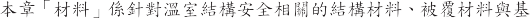
2.1.2
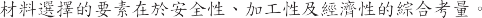
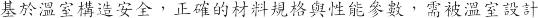
( 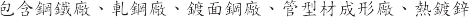
) 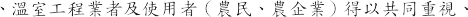
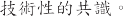
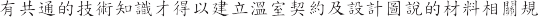
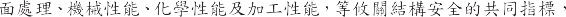
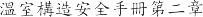
2.1.3
(1)
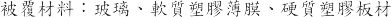
(2)
(3)
-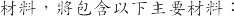
、基材、型材、管材
2.1.4
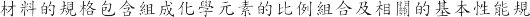
JIS 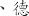
DIN 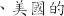 ASTM 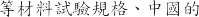 GB 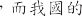 CNS
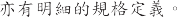
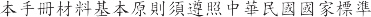 CNS 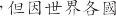
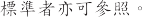
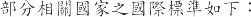
(1) CNS

(2) ASTM
(3) AISC
(4) AWS
(5) JASS
(6) SSPC
(7) SCI

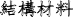
結構材料
結構材料
温室結構材料中的金屬材料具有高度的工業化、高剛性、高強度且具環保型的回收性 其佔温室材料總重 90%以上 定現代温室最主要的結構材料。
結構所使用的金屬材料包括結構用基本金屬材料（如鋼材、鋁材）、型管材(型材、管材)及接合物(如螺絲、 鉚釘、螺栓、螺恨、墊片與焊接材料等)。材料應符合所列 CNS 中國國家標準 接合物亦須符合規定。結構用金屬材(如板、片、棒、線、連接材)所使用的材料 其化學成份、機械性質均須符合 CNS 或相關國際標準的規定 若未能符合規定需求的鋼材 需設計者再審查 否則不應使用。
品質的認定方法 通當先依原生產工廠經合格標準測試實驗室所出具的品質證明書。但對各項材料如有安全考量或有爭議之虞 應共同取樣 經合格的第三方公證單位檢測。
規格定義
於農業温室 對材料專有名詞當被簡化成簡易的說法 但實際的管材材質、管徑、厚度、精度將直接影零到管的機械性能 而鍍膜的材料紐合、鍍層厚度、鍍膜方法、亦將影零到鍍膜結合強度、鍍層耐腐蝕能力、管材弄命等。
故温室的構造安全需喵實掌握所設計構件材料的質(材質與性質)、形(尺寸與形狀精度)、貌(表面處理)、能(物理性能、機械性能、化學性能)等重要參數與標準規格。
本節將分三大部分說明 分別為基本金屬、型材、管材 將各別討洒其對應的質、形、貌、能等設計參數。
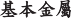
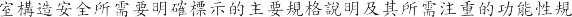
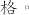
1.
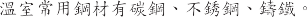
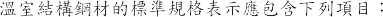
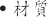 ( 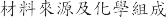)
( 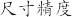)
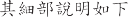 :
(1) 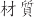：
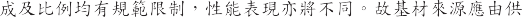
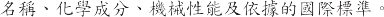
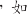
1) 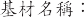 ( 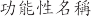 + 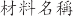) ( )
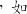
2) ( 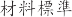 + 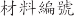) (SUS 304) CNS
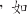
3) 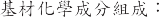 ( 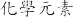+ % ) ( Ni 8% Cr16%)
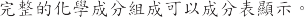
形狀：
基本金屬材料形狀主要分為板材與棒線材，其說明如下：鋼廠的基本鋼材分別由不同的中間成形廠完成，如鋼板廠、熱軋廠、 冷軋廠、鍍面廠、烤漆廠及棒線廠等，有其不同的生產模式及品質狀況，因標準鋼廠均考量其經濟產能，通常為資本密集及技術密集產線，生產自動化、連續化及標準化，品質速度成本控制均較為穩定。
形狀別：
中厚板材( t≧15mm)
熱軋帶材(20mm≧t≧1.6mm) c.冷軋帶材(0.4≦t≦4.5mm)
線材(d≦5.5mm)
棒材(d≧5.5mm)
尺寸形狀精度與單位重量： a.板材：
通常其生產有冠高(crown)中間會偏厚，分條處理後兩側可能不同厚，其尺寸標示需含長度、寬度、厚度與精度。板材因受冠高因素難以理論計算，故以整捲重及總長度量測計算等寬的單位長度重量。
b.棒線材：
外徑尺寸、精度與真圓度。棒線材直徑因受真圓度的影響，不易快速量測，故單位長度的重量，方便於量測與快速檢驗。
表面品質
基本金屬軋延材的表面特徵
黑皮表面： 熱軋材料表面,表面具原熱軋冷卻後銹皮。
精整表面： 熱軋精整表面,表面平整且具較均勻的降伏應力。
c. 噴砂處理面： Sa 0, 1, 2, 2 1/2, 3
手工硏麿面： St 0, 1, 2, 3
表面處理面： 酸洗、鹼洗、噴砂、硏麿、拋光
冷軋表面： 經酸鹼洗及冷軋延後的精整表面
基本金屬鍍面材的表面特徵
鍍膜材質： 鍍鋅、鍍鋁(5%)鋅、鍍鋁(55%)鋅、鍍鎂鋁鋅
鍍前處理： 鹼洗、酸洗、清洗、還原、預熱
鍍膜方法： 預連續鍍、批次式後熱浸鍍
鍍膜厚度： µm , g/m2
基本金屬預塗烤漆材的表面結構 a.塗膜層數：底漆、中漆、面漆 b.塗前處理： 鹼洗、酸洗、清洗
c.塗膜方法：連續塗漆、粉體烤漆、手工塗漆 d.塗層材質：多道次多層塗霞維合
e.塗膜道次厚度：多道次厚度維合 4)基本金屬複合材的表面結構
基本金屬基於特殊功能需求可結合高分子材料複合成新式複合材料,使其具有新式機能。其主要結構如下：
混合材料複合：如瀝青
織維材料複合：如玻璃織維 c.層狀材料複合：如橡膠或塑膠
材料性能
基材材質由其基本化學元素紐成 其性能可由a金的添加、熱機處理的苑作、塑性加工變形以提高材料強度 但相關機械性能、化學性能及加工性能均因此而有所變異 而性能往往總無法全面性提升 需注意真正的應用設計需求的適應性。材料主要性能包含機械性能、化學性能、加工性能。
機械性能
a.降伏強度(YS) b.抗拉強度 (TS) c.抗拉降伏比(%) d.延伸率(%)
化學性能 a.耐蝕性能 b.耐酸性能 c.耐鹼性能
加工性能
一般用料(CQ )
結構用料(SQ )
深衝用料(DQ )
2.
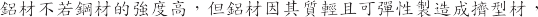
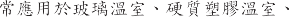 ETFE
(1)
1)

A5052 A6061 2)
T5
 T6
T63)
4)
( )
 ( )
( )A6063
)
(
2)
A1000 A2000 A3000
A4000
A5000
A6000
A7000
1000
99%
2000
3000
4000
5000
6000
7000
(


I
型材：
温室結構中，型材可創造形狀強度，並適當的維合設計後可形成具有高維合強度的結構系統，但基於溫室結構安全，任何型材的強度及奪命，仍需從其材質、形狀、表貌、機能等四項進行綜合考量設計。型材的基本材質將決定其基礎強度，且型材具有其方向性的差異，故選擇高強度材質為基材，同時考量負荷的方向性，可得輕量化且高強度的維合型材。
但結構材料中的斷面，需注意選擇不易扭轉的雙軸對稱斷面，在受扭力模式下需特別注意，如樑柱中，受力的方向性，力的模式如軸力丶拉力、壓力、扭力、剪力都需注意其負荷抵抗的穩定性。
在較薄的型材使用下，斷面模式、旋轉半徨、材料強度，均需考量其挫 曲的風 險性。
型材維合件，則需考量其結露水或雨水的滯留，汙染物的堆積，焊道的後 處理，避免衍 生化 學腐蝕與電化 學腐蝕，降低壽命與結構 安全。
溫室型材的標準規格表示應包含下列項目：
·材質材( 料來源、種類編號及化學維成)
·形狀尺( 寸精度)
·表面處理
·材料性能
其紬部說明如下:以下針對型材的各方面性能需求定義如下：
材質
材料種類
材料編號
化學成分維成
基材性能 (2)形狀
型材形狀定義包含
成形方法
a.
b.
c.
d.
2)
a.H
b.L
c.I

d.C
e.
f.
g.
3)
a. C (C ) (CS)
b. C ( ) (C)
c. Z (ZS)
d. Z (Z)
e. L (LS)
f. L (L)
g. (HS)
h. (H)
i. CC
4)
a.
b.
c. (3)
1)


a.
Sa 0
1
2
2 1/2
3
b.
St 0
1
2
3
c.
a.
b.
c.
m
g/m2
a.
b.
c.
2)
3)

d. m / m/ m
4)
a.
b.
(4)
1)
a.
b.
c.
d.
e.
2)
a.

b.
c.
管材：
溫室結構中 圓管材提供均勻方向的受力構件 在簡易溫室中被大量的使用 矩形管材則有其受力的方向性 可提供適當的設計。
但管材的基本材質仍將決定其基礎強度 如因小管伝管材的成形方便而選用較低強度材料 將大量降低管材結構強度。國際管材的材質強度除持續提升中 管材的形狀因子也在提升中 除圓形管材、矩形管材、也有多邊形管材及橢圓形管材出現。
在帝見的溫室管材表面處理採用後熱鍍鋅法 以標準化的前處理及熱浸鍍處理 可得較厚的鍍鋅層以利環境腐蝕抵抗。但不良的前處理往往造成脫鋅及鍍層不土的缺陷 而批次式後熱浸鍍槽有其長度限制 故管材長度有其限制。
預鍍鋅法成形管材 因其標準化及連續化的鍍前處理及熱浸鍍鋅製程 可得性能穩定的鍍層及較長管材 但需注意鋅層厚度的選擇設計 而預鍍型管材 因其鍍槽的模式 持續有開發出多元合金的鍍膜 可提升抗蝕性能。但以預鍍鋅板製管 因有其焊道處的變數 故焊道的應力消除及焊道的耐蝕處理會是後續加工成形及耐蝕壽命的關鍵因素。
溫室管材的標準規格表示應包含下列項 ：
材質(材料來源及化學維成)
形狀(尺寸精度)
表面處理
材料性能
其鈿部說明如下:
材質
材料種類
材料編號
化學成分維成
2-1


1)
2)
3)
4)
a.
b.
a.
b.
a. (SH)
b. (RH)
a.
× ( )
× (
 )
)b.
c.

1)

a. Sa 0 1 2 2 1/2 3
手工硏麿： St 0, 1, 2, 3
化學處理： 酸洗、皮膜處理
鍍膜
鍍膜材質：鍍鋅、鍍鋁鋅、鍍鎂鋁鋅
鍍膜方法：預連續鍍、批次式後熱浸鍍
鍍膜厚度：µm , g/m2 3)塗層
塗膜層數：底漆、中漆、面漆
塗膜方法：連續塗漆、粉體烤漆、手工塗漆
塗層材質
塗膜厚度：µm / µm/ µm 4)農層
農層材質
農層厚度
材料性能
機械性能：
降伏強度
抗拉強度
延伸率
斷面係數
抗彎強度
壓扁測試
化學性能：
耐蝕性能
耐酸性能
耐鹼性能
種類
抗拉強度降伏強度焊接部位
符號
抗拉強度
N/ mm2
伸長率％
（t 8mm)
壓扁性
彎曲性
Ni m而
Ni m吖
平飯間距
離( H)
彎曲
內側
角 度 半 往
適用外徑
表 2-2
常用銅管的機械性質
所有尺寸
所有尺寸
所有尺寸
所有尺寸
50mm 以下
STK400
400 以上
235 以上
400 以上
2 /3D
goo 6D
STK490
490 以上
315 以上
490 以上
2 /3D
goo 6D
235 以上
23
焊接部位彎曲性
STKR490
490 以上
325 以上
23
依買方要求
I
被獲材料
温室依據其農業拖作需求 可選擇不同的被獲材料 包含陽光、空氣、
風、水 的通過 或蟲害、污染、冷風、烈 的遮蔽 但因其具棓當大面積的温室屋項與牆 面遮蔽材料 將直接承受風、雨、雪的衝擊並將載重直接傳遞至温室結構上 温室被獲材料文攸關作物生產品質與產量 又同時牽涉温室結構安全的關鍵部材。
而温室的設計分析往往假設被獲材料仍於完整且形成封閉區間的受載重狀況 一旦於其生命週期中的。部玻損 恐導致 整體載重的劇烈改變 而使温室結構遭受 更大的衝擊。温室被獲材料除考慮其於全 新狀況下的性能表現 對其隨時間的推移所 形成的材料性能劣化也文一大監控要素。
被獲材料的主要分類包含玻璃、軟性簿膜、硬質塑膠等三大類。
其選擇的重要規格則因應作物生長需求、作物所需的內部環境要素、面對外部環境負荷的結構安全考量 應包含以下性能參數:
·光學性能 :
因作物生長需求 其對陽光亦有不同的需求。被獲材料於光學性能已從其材料、上下表面的紋理及鍍膜處理上 有許多新的設計。除注意透光性外 光線的穿透模式如直線光或散射光 均可有所選擇。紫外線或紐外線的。部擱截亦有對應的設計。
·物理性能 :
因被獲材料的基本物理性質不同 形狀、尺寸、密度將會影響其於温室項部展現的重量、硬度及耐久性。
·熱學性能 :
被獲材料的熱學性能將影響温室內環境的保温性、耐熱性、耐寒性 被獲材料的熱膨脹與冷收縮亦影響温室被獲的安裝重點與維護要素。
·流體性能
被獲材料的流學性能將影響温室被獲材外膜與風、雨、塵土、髒污的結合性 其亦會影響温室被獲內層的滴流性、防霧性及薳類的孳生性。
·機械性能
被獲材料的機械性能將影攀被獲材料的抗風性、抗壓性及壽命性。亦需
力 的 的 性 的 裂 。
·化學性能
被獲材料的化學性能將影攀被獲材料的耐候性、耐久壽命、性能衰退性
(機械性能、光學特性)等 耐燃性及回收性亦 要項。
被獲材料的分類與適用規範
玻 璃 (CNS R2013)
普通玻璃
(2) 玻 璃
(3) 功能性玻璃
2. 軟性簿膜(CNS K3007/JIS K6732 K6783)
農業用聚氯乙烯塑膠布(PVC)
農業用聚乙烯塑膠布 (PE)
農業用乙烯-醋酸乙烯共聚合塑膠布 (EVA)
農業用聚酯塑膠布 (PET)
農業用聚烯烴膜 (PO)
農業用四氟乙烯塑膠布 (ETFE)
硬質塑膠(CNS 3034/JIS A5701)
農業用玻璃懺維板 (FRP)
農業用玻璃懺維壓克力板 (FRA)
農業用聚丙烯壓克力板 (MMA)
農業用聚探酯板 (PC)
被獲材料的特性
理性能
尺寸(厚X寬X長)
比重
硬度
耐久性(年)
光學性能
透過性
波長別透過性
透明性/全光線通過率(%)ASTM D-1003
遮光性
散光性
光質
熱學性能
保溫性
斷熱性
通氣性
耐候性
耐熱性
耐寒性
熱傳導率(W/Mk) ASTM D-177
熱膨脹係數(/度 C)
比熱(J/kg.K)
熱收縮率(80 度 C-30 分鐘)
流體性能
滴流性
防霧性
透濕性
機械性能
引張破裂強度(Mpa)
壓縮強度(Mpa)
伸長率(%)
彎曲強度(kg/cm2)ASTM D-790
低温衝擊強度(J)
落球實駮(kgm)
展開性
開閉性
伸縮性
化學性能
耐綦品性
抑藻性
然可分解性
可燃燒性
主要被農材料的性能控制參敦
玻 璃 (SiO2)
玻璃主要種類
普通玻璃
高強度玻璃
功能性玻璃
玻璃的主要規格項目玻璃種類丶
材料成分丶
形狀尺寸精度丶抗張強度丶
耐風壓力丶透光度
玻璃應用的重要參敦
光學特性
然光全光線透光率、散亂光性、紫外線透過性、紫外線調整性、遮光性、光質
機械性能
抗張強度、引裂強度、耐風壓力、廷伸率、低温衝擊強度
物理性能
密度、厚度、寬幅、重量
熱學性能
保温性、耐熱性、耐寒性、熱收縮率
機能性
滴流性、防霧性、耐菓性、抑藻性
耐久性
耐候性、耐久壽命、性能.., 退性(機械性能、光學特性)
環保回收性
然可分解性、可燃燒性
柔性簿膜
主要規格項目
·簿膜種類
材料成分
形狀尺寸
光學特性
抗張強度
耐風壓力
柔性簿膜的主要種類及材料
農業用聚氯乙烯塑膠布(PVC)
農業用聚乙烯塑膠布 (PE)
農業用乙烯-醋酸乙烯共聚合塑膠布 (EVA)
農業用聚酯塑膠布 (PET)
農業用聚烯烴膜 (PO)
農業用四氟乙烯塑膠布 (ETFE)
柔性簿膜的重要參數
光學特性：
然光全光線透光率、散亂光性、紫外線透過性、紫外線調整性、遮光性、光質
機械性能：
抗張強度、延伸率、引裂強度、低温衝擊強度
物理性能：
密度、厚度、寬幅、重量
熱學性能：
保温性、耐熱性、耐寒性、熱收縮率
機能性：
滴流性、防霧性、耐菓性、抑藻性
耐久性：
耐候性、耐久壽命、性能.., 退性(機械性能、光學特性)
環保回收性：
然可分解性、可燃燒性
硬質塑膠：
硬質塑膠主要種類及材料
農業用玻璃懺維板 (FRP)
農業用玻璃懺維壓克力板 (FRA)
農業用聚丙烯壓克力板 (MMA)
農業用聚探酯板 (PC)
硬質塑膠主要形狀
平板
波浪
複層板
硬質塑膠重要參數
光學特性：
然光全光線透光率、散亂光性、紫外線透過性、紫外線調整性、光透過性、分光透過性、光質
機械性能：
抗張強度、延伸率、引裂強度、衝擊強度、落球試驗、彎曲強度
物理性能：
密度、厚度、寬幅、重量
熱學性能：
熱傳導率、保溫性、耐熱性、耐寒性、熱收縮率、燃燒性
機能性：
滴流性、防霧性、耐菓性、抑藻性
耐久性：
耐候性、耐久壽命、性能.., 退性(機械性能、光學特性)
環保回收性：
然可分解性
基礎材料
基礎材料種類及功能說明
温室整體結構於各種載重下 最終需經過基礎的整凸設計以進行載重的傳遞於地面 並也承受拉拔的載重。
温室基礎受力模式則包含 Fx、 Fy、 Fz、Mxy、Myz、Mzx 等六個方向的作用力與力矩。而透過柱與柱底板、基礎螺絲與基礎形成力的傳遞與平衡。
基礎結構區分為強固型温室基礎與簡易型温室基礎。分別說明如下：主要基礎形式包含：
強固型基礎
簡易型基礎
強固型基礎
強固型基礎分為獨立基礎、連續性條狀基礎。
連續性條狀基礎已如地樑的設計 相對結構安全穩固。
獨立基礎苑工較方便成本較低 主要區分為預製型基礎及現場澆鑄型基礎。基礎的作用在於基礎底板上的載重物質及基礎側邊的摩擦力的紐凸。但須考量其力的傳遞與拉拔抵抗。基礎的混凝土短柱項高程應高於室 內地平線以免立柱柱腳受潮腐蝕 可高 300~500mm 根據不同温室的用途和現場情況而定。
基礎結構材料以鋼筋混泥土建構 其鋼筋材料與混泥土材料及製造紐凸方法需注意材質、配給、苑工、養生方式 以建立正瓘的基礎。基礎的鋼筋混泥土各 扮演載重及保護的功能。鋼筋與基礎螺絲的紐凸結構 其與温室柱結構的連結具有高強度抗拉性能 以將温室的各種載重傳遞到大地 其所受的載重除了六種基礎受力模式外 亦要對抗偶發性的地震力抵抗、長期受風動的疲勞反農載重及地層的各種腐蝕環境負荷。
固定式基礎的主材料包含鋼筋、混泥土及基礎螺絲 技術規格分別敘逑如下:
銅筋
銅筋使用普通銅筋或竹節銅筋。
材質需由來源銅廠出示材質蠔明及無輻射銅筋蠔明。
銅筋形狀、尺寸、重量、精度需依設計管制。
銅筋機械性能強度包含降伏強度、抗拉強度、延伸率。
基礎螺綠
基礎螺綠形狀、尺寸、精度均需依設計管制。
材質需有原廠材質蠔明。
基礎螺綠性能強度包含降伏強度、抗拉強度、延伸率。
基礎螺綠將扮演與地上溫室結構及地面基礎的連結，需注意其紇工前及安裝後的防蝕處理。
混凝土
使用符合 CNS61 R2001 (波特蘭水泥) 所規定之普通水泥，已凝結水泥不可使用。
骨材粒料須清淨、堅硬、耐久，不可含有害的雜質、土、有機不純物等。
鈿、粗骨材隔開儲存，並注意土、垃圾等有害雜質的滲混。
混凝土的级配，以能得到所要之強度、工作性、均勻性及持久而決定。级配的表示法及選擇，請參照中國土木工程師學會「銅筋混凝土建築紇工規範 」。
混凝土拌合用水須清潔，無油、無酸、無鹼、無-=- 等，更不得使用海水。各種拌合料於每次拌合時正確計量
使用預拌混凝土需依 CNS A2042 的規定。注意混凝土強度、塌度及混凝土量，到貨 時以一次到貨量控制。
簡易型基礎